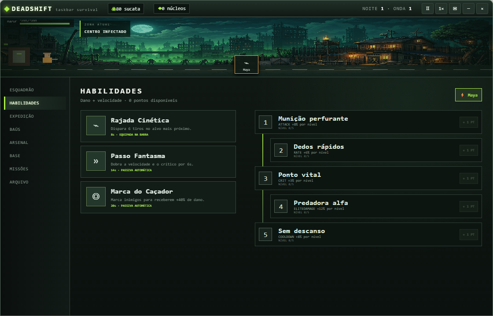

EXPLORE QUATRO ZONAS
O grupo caminha por centro urbano, rodovia de evacuação, metrô inundado e distrito em chamas.

Veja seu esquadrão caminhar por zonas infectadas, acione habilidades e construa talentos enquanto trabalha.
Windows 10/11 · x64 · Gratuito · Salvamento localO grupo caminha por centro urbano, rodovia de evacuação, metrô inundado e distrito em chamas.
Ative ataques especiais enquanto cada sobrevivente usa automaticamente suas técnicas de suporte e controle.
Invista em talentos individuais, rotas de expedição e abra três categorias de baús com loot progressivo.

Maya combina dano e velocidade; Bruno segura a linha; Yuri cura e acelera aliados; Iris domina hordas com fogo e controle.